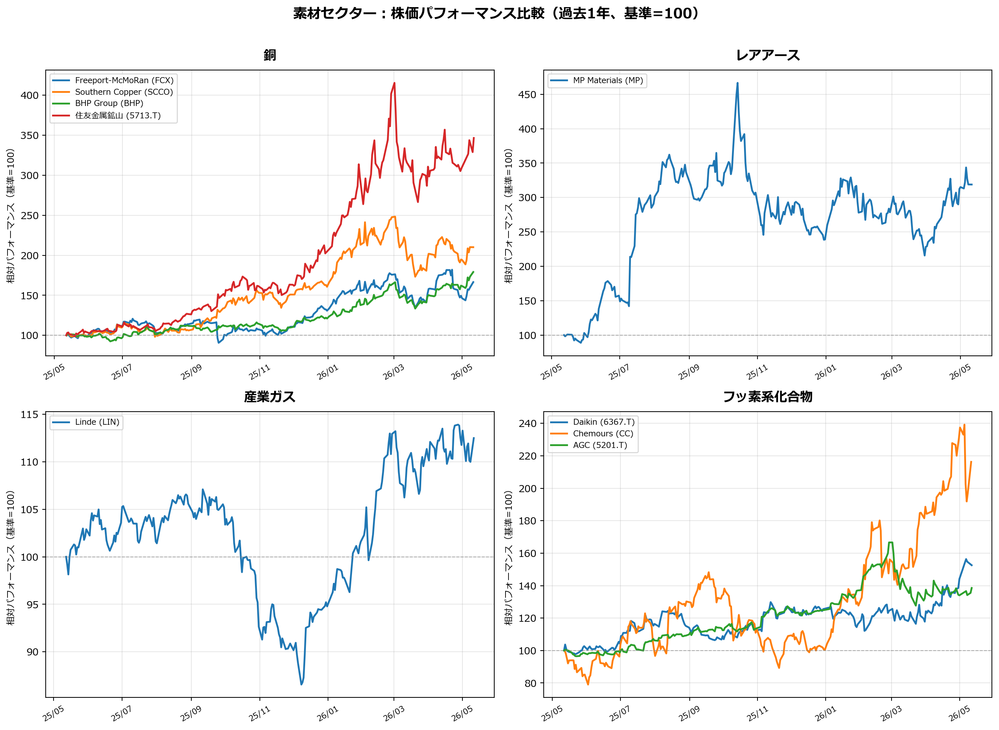
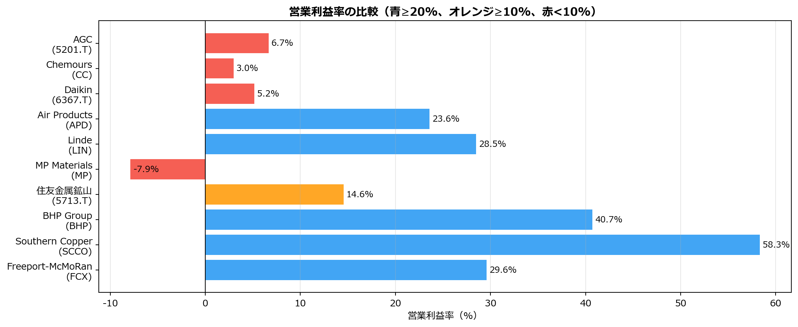

時価総額 予想PER EV/EBITDA 営業利益率 売上成長率(YoY) ROE D/E
グループ 銘柄
銅 Freeport-McMoRan (FCX) $92.5B 17.4 11.5 29.6% 8.8% 15.6% 33.0
Southern Copper (SCCO) $153.0B 27.4 17.5 58.3% 36.2% 46.3% 62.4
BHP Group (BHP) $222.7B 16.5 17.7 40.7% 10.8% 24.7% 52.6
住友金属鉱山 (5713.T) $2894.9B 26.3 24.4 14.6% N/A 5.0% 30.1
レアアース MP Materials (MP) $12.0B 52.5 -2199.2 -7.9% 118.6% -4.2% 44.0
産業ガス Linde (LIN) $233.2B 25.6 18.9 28.5% 8.2% 18.2% 65.6
Air Products (APD) $67.8B 21.4 22.6 23.6% 8.8% 12.4% 101.6
フッ素系化合物 Daikin (6367.T) $7090.8B 24.5 10.9 5.2% 7.9% 9.3% 29.4
Chemours (CC) $3.8B 11.1 13.1 3.0% 1.0% -103.0% 2033.8
AGC (5201.T) $1220.2B 13.9 6.5 6.7% 2.5% 4.7% 37.3素材・上流資源：AIインフラの物理的基盤
AIデータセンターは「鉱物と金属の塊」である。データセンター1MWの構築には60〜75トンの各種鉱物・金属が埋め込まれ、その争奪戦はすでに始まっている。
なぜ素材が投資テーマになるのか
AIインフラへの資本投下はGoldman Sachsの予測で2028年までに約3兆ドル規模に達するが、その物理的基盤を担う素材・資源セクターへの注目は、まだ初期段階にある。
構造的な非対称性：
- AIの進化スピード ＞＞ 地球を掘るスピード（新規銅鉱山の開発：平均15〜20年）
- データセンター建設コストに占める銅の調達費用はわずか0.5%未満→価格高騰でも建設計画は止まらない（需要の非弾力性）
- ビッグテックのCapEx（Amazon約2,000億ドル、Microsoft約1,900億ドル、Google約1,800〜1,900億ドル、Meta約1,250〜1,450億ドル：2026年単年予測）が物理資源の川上に直接流れ込み始めている
素材別需要定量データ
| 素材 | DC 1MW当たり使用量 | 2025〜2030年需要増見通し | 世界生産量・市場規模 |
|---|---|---|---|
| 銅 | 27〜33トン（システム全体）/ 12トン（施設内部のみ） | 2030年までに+512千トン（AI/DC向け）＋送電網で+1.1 Mtpa | 上位3カ国で世界生産の60%を占有 |
| シリコン（高純度） | N/A（プロセッサ・メモリの基盤） | 2030年までに+75千トン（DC向け） | インド等は輸入依存 |
| ガリウム | N/A（GaN電力変換器・光トランシーバ） | 2030年までに世界需要の+11%（AIインフラ向け） | 世界一次生産の98%を中国が独占 |
| ゲルマニウム | N/A（光トランシーバ・半導体微細化） | N/A | 世界精錬能力の60%を中国が独占 |
| インジウム | N/A（半導体・回路基板） | N/A | N/A |
| コバルト | N/A（UPS用LiB・冷却系合金） | N/A（EV減速で上値限定的） | Glencore カタンガ事業：年間340kt（世界シェア15%） |
| ニッケル | N/A（UPS用電池・耐食合金） | 2024年にエネルギー・DC向けで+6〜8% | インドネシアが50%支配（中国資本が流入） |
| アルミニウム | N/A（ヒートシンク・筐体） | N/A | 米国の輸入依存度47% |
| レアアース（ネオジム等） | N/A（HDD磁石・冷却ファン・モーター） | 2030年までに世界需要の+3%（DC向け） | 中国が精錬能力の90%・埋蔵量の38%を支配 |
| フッ素系化合物 | N/A（液冷システム・洗浄剤） | 市場規模：6.45億ドル（2025）→13.85億ドル（2032）、CAGR 11.52% | 年間消費上限目安：約108,000トン |
| 高純度石英 | N/A（石英るつぼ・光ファイバー） | N/A | Spruce Pine（米）：年間10,000kt ／ Drag（ノルウェー）・Moora（豪）：年間267kt |
| ヘリウム | N/A（半導体製造プロセス・光ファイバー） | APAC でCAGR 6.87%成長 | 米国：Grade-A販売量推定8,100万立方メートル（約9.7億ドル、2025年） |
出典：Goldman Sachs、Wood Mackenzie、BloombergNEF、McKinsey、IEA、USGS
地政学・供給リスクマップ
中国依存度と代替供給国
| 素材 | 中国依存度 | 代替供給国・地域 | リスク特性 |
|---|---|---|---|
| ガリウム | 98%（一次生産） | 短期的に代替困難 | ボーキサイト精製の副産物。輸出規制で即座に価格スパイク |
| ゲルマニウム | 60%（精錬能力） | DRC、ベルギー、カナダ | Umicore等が欧州内に代替精製拠点を構築中 |
| レアアース | 90%（精錬能力）/ 38%（埋蔵量） | 豪州、米国、グリーンランド | 下流の加工能力も中国が圧倒。価格を人為的に低く維持し西側の鉱山投資を阻害 |
| ニッケル | 71%（インドネシア精錬、中国資本が支配） | フィリピン、豪州、カナダ | 東南アジアへの中国投資が供給網を実質支配 |
| コバルト | 54%（DRC埋蔵量を中国企業が掌握） | 米国（リサイクル）、カナダ | 政情不安・労働環境問題・価格乱高下 |
| 黒鉛 | 高（精製能力の大半） | アフリカ諸国、豪州 | 最終用途審査の厳格化対象 |
中国による輸出規制タイムライン（2024〜2025）
| 日付 | 措置内容 |
|---|---|
| 2024年8月15日 | アンチモン関連品目を輸出制限リストに追加 |
| 2024年12月3日 | ガリウム・ゲルマニウム・アンチモン・超硬材料の米国向け輸出を原則禁止（第46号）。黒鉛の審査も厳格化 |
| 2025年2月4日 | タングステン・テルル・ビスマス・インジウム・モリブデンに新たな輸出管理（第10号）。米国製品に10〜15%報復関税 |
| 2025年4月4日 | 重希土類7種（サマリウム・ガドリニウム・テルビウム・ジスプロシウム等）およびレアアース磁石に輸出規制（第18号）。米国への関税+34% |
| 2025年11月9日 | 第46号の一部（ガリウム・ゲルマニウム等の米国向け禁輸）を2026年11月27日まで一時停止。ただし軍事用途禁止・レアアース規制（第18号）は継続 |
重要： 2025年11月の「一時停止」は猶予期間に過ぎない。中国は輸出管理の執行能力を着実に高めており、政治的に有利と判断すればいつでも再稼働できる。
主要銘柄分析
銅：AIインフラの最大消費素材
| 企業名 | ティッカー | 本社 | 銅純度 | 特記事項 |
|---|---|---|---|---|
| Freeport-McMoRan | FCX (NYSE) | 米国 | 高 | 米国内最大級の銅生産能力。機関投資家資金の第一の受け皿 |
| Southern Copper | SCCO (NYSE) | 米国/メキシコ | 最高 | メキシコ・ペルーに巨大鉱山。銅事業への純度が最高水準、利益率が異常に高い |
| BHP Group | BHP (NYSE/ASX) | 豪州 | 中〜高 | KoBold Metalsへの出資者。AI需要予測を基に探査・開発を強化 |
| 住友金属鉱山 | 5713 (TYO) | 日本 | 高 | チリ等の海外優良銅鉱山の権益を多数保有。日本株で銅高騰の恩恵を最もダイレクトに受ける |
投資テーマ： Goldman Sachsの2027年銅価格予測は$10,750/トン（現在比+約30%）。BloombergNEFは2025年以降の構造的赤字入りを予測し、2050年には1,900万トンの供給不足と警告。銅価格高騰でも建設計画は止まらない（需要非弾力性）ため、鉱山会社の価格決定権が極大化する局面にある。
レアアース：地政学ヘッジの最重要テーマ
中国が精錬能力の90%を独占する中、米国は同盟国（Five Eyes・USMCA）の企業を優遇する構造が固まりつつある。
| 企業名 | ティッカー | 本社 | 世界的立ち位置 | 特記事項 |
|---|---|---|---|---|
| MP Materials | MP (NYSE) | 米国 | 米国唯一の統合型レアアース鉱山・精製 | Mountain Pass（カリフォルニア）。米国防総省（DoD）との契約あり。CHIPS法・IRA関連の補助金・優遇措置の直接受益者 |
| Lynas Rare Earths | LYC (ASX) | 豪州 | 中国外最大のレアアース生産者 | オーストラリア（Five Eyes同盟国）。米国・豪州政府の戦略的後押しあり。マレーシア＋豪州で処理 |
投資テーマ： 中国が2025年4月にレアアース磁石への輸出規制を発動した直後、米国政府はMP Materialsへの追加支援を強化。「地政学プレミアム」が株価に織り込まれる構造は長期継続する。Lynasは米国の友好国・同盟国企業として、米国市場へのアクセスで最も恩恵を受けるポジションにある。
産業ガス・ヘリウム：半導体製造の生命線
| 企業名 | ティッカー | 本社 | 特記事項 |
|---|---|---|---|
| Linde | LIN (NASDAQ) | 英国/米国 | ヘリウム抽出・半導体向け高純度ガスで世界最大。強固な物流網 |
| Air Products | APD (NYSE) | 米国 | パイプラインネットワークと極低温技術に強み。ヘリウム寡占の一角 |
| Air Liquide | AI (EPA) | フランス | エレクトロニクス・ヘルスケア向けヘリウム市場の主要プレイヤー |
フッ素系化合物：PFAS規制が生む市場再編
3Mが2025年末でPFAS製造から撤退。この空白を埋める企業に特需が発生している。
| 企業名 | ティッカー | 本社 | 純度 | 特記事項 |
|---|---|---|---|---|
| Daikin Industries | 6367 (TYO) | 日本 | 高 | フッ素ポリマー・液冷材料の世界最高水準。PFAS代替技術をリード |
| Chemours | CC (NYSE) | 米国 | 高 | 高純度フッ素ポリマー・特殊ガスに特化。米国最大の生産プラットフォーム |
| AGC | 5201 (TYO) | 日本 | 中 | 電子部品・半導体向けフッ素流体・化学品に強み |
| Honeywell | HON (NASDAQ) | 米国 | 低〜中 | 低GWP冷媒・電子機器向けフッ素材料でDC近代化需要を獲得 |
コバルト：現時点では慎重に
| 企業名 | ティッカー | 本社 | 特記事項 |
|---|---|---|---|
| Glencore | GLEN (LSE) | スイス | コンゴ(DRC)のKatanga事業で世界コバルト生産の15%。地政学リスク高 |
注意： EV向けNMC系からLFP系（コバルト不使用）へのシフトにより、価格上値は限定的。AI/DC向けUPS電池需要は存在するが、今サイクルでは優先度低め。
価格動向と予測
| 素材 | 直近動向（2020〜2025年） | 2027〜2030年予測 | 主なドライバー |
|---|---|---|---|
| 銅 | $4.10/ポンド（2024年前半）→ $5.65/ポンド（2026年初頭）、史上最高値圏 | $10,750/トン（Goldman Sachs 2027年予測）。一部で$15,000/トンのシナリオも | 需要非弾力性・構造的供給不足・新規鉱山の15〜20年のリードタイム |
| ガリウム/ゲルマニウム | 2024年の輸出規制で25〜30%の急騰 | N/A（地政学的規制の開閉に完全に従属） | 中国の輸出管理が価格のベースラインを恒久的に押し上げ |
| コバルト/ニッケル | 2021〜2022年ピークから大幅下落 | N/A（上値限定的） | LFPシフト・インドネシアの大増産が価格を抑制 |
| レアアース | ミャンマー輸入制約・中国割当削減で2025年に回復基調 | N/A | 中国が戦略的に低価格を維持し西側の投資を阻害 |
| フッ素系化合物 | 堅調・高付加価値製品として安定 | CAGR 11.52%（DC向け冷却液市場） | PFAS規制による市場再編・代替需要 |
ビッグテックによる川上の囲い込み事例
| 時期 | 関与主体 | 対象 | 内容 |
|---|---|---|---|
| 2024年 | Microsoft | Brookfield | 10GW規模の長期再生可能エネルギーPPA（電力の川上確保） |
| 2025年1月 | a16z・三菱・Equinor・BHP Ventures等 | KoBold Metals | シリーズC：5.37億ドル調達（評価額29.6億ドル）。AIを使ってザンビアのMingomba銅鉱山を探査 |
| 2025年（最近） | Amazon | The Good Rice Alliance等 | 長期オフテイク契約：68.5万トン以上の炭素除去クレジット購入 |
| 2025年（最近） | Google・Meta・McKinsey | Living Carbon | 10年間で13.1万トンの炭素除去クレジット長期購入 |
| 2025年（最近） | Microsoft | Svante Technologies | 15年間・62.6万トンのBECCS由来CDRクレジット確保 |
KoBold Metalsの象徴的意義： AIを使って、AIインフラに必要な物理素材（銅・ニッケル・コバルト）を掘り当てるという「自己増殖的な資本のループ」。シリコンバレーの主要VCと重電・資源メジャーが同じテーブルに座っている。
定量分析（財務データ）
バリュエーション・収益性サマリー
株価パフォーマンス比較（過去1年）
Failed to get ticker 'LIN' reason: Failed to perform, curl: (28) Operation timed out after 10014 milliseconds with 0 bytes received. See https://curl.se/libcurl/c/libcurl-errors.html first for more details.
Failed to get ticker 'APD' reason: Failed to perform, curl: (28) Operation timed out after 10007 milliseconds with 0 bytes received. See https://curl.se/libcurl/c/libcurl-errors.html first for more details.
営業利益率の比較
